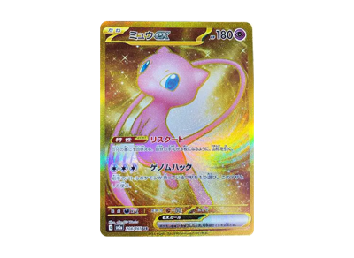
ミュウex UR 208/165current: ¥15,999 (Mercari) — checked 5h ago
Low ¥14,500
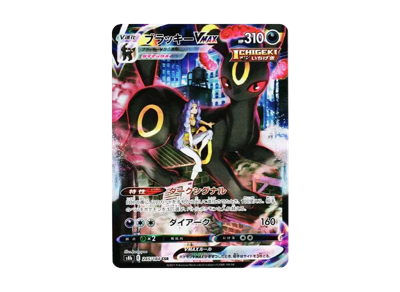
ブラッキーVMAX 245/184current: ¥19,222 ↓ (Mercari) — checked 5h ago
Low ¥17,999
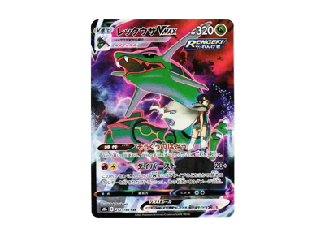
レックウザVMAX CSRcurrent: ¥25,000 (Mercari) — checked 5h ago
slight down
Low ¥16,000
 レックウザ 252/184
レックウザ 252/184
current: ¥25,000 (PayPay Flea Market) — checked 5h ago
slight down
Low ¥16,000
ピカチュウVMAX 223/184
current: ¥30,400 ↑ (PayPay Flea Market) — checked 5h ago
slight down
Low ¥20,000
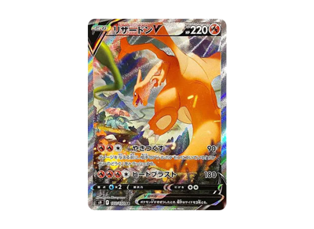
リザードンV SR 103/100current: ¥44,200 ↑ (Mercari) — checked 5h ago
Consider at 57k
Low ¥40,000
 イーブイ&カビゴンGX SM-P 297
イーブイ&カビゴンGX SM-P 297
current: ¥73,399 ↓ (SNKRDUNK) — checked 5h ago
Low ¥69,000
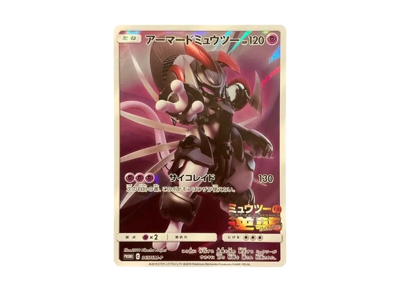
アーマードミュウツーcurrent: ¥112,900 ↑ (SNKRDUNK) — checked 5h ago
Low pop
Low ¥100,000
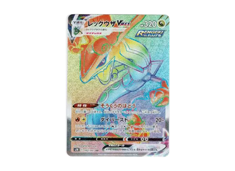
レックウザVMAX HRcurrent: ¥43,700 (SNKRDUNK) — checked 5h ago
Low ¥38,000
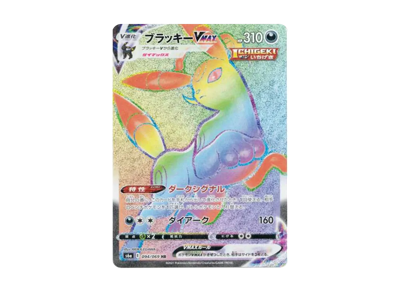
ブラッキーVMAX HRcurrent: ¥18,000 (SNKRDUNK) — checked 5h ago
Low ¥16,000
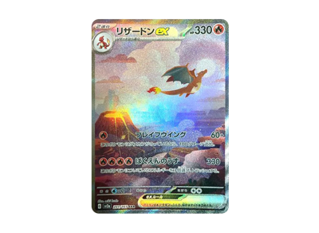
リザードンex 201/165current: ¥74,800 ↑ (Mercari) — checked 5h ago
75k is pre-bubble
Low ¥69,000
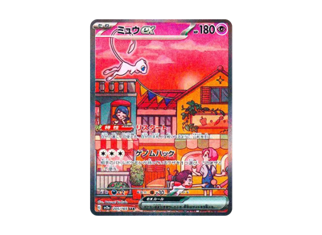
ミュウex SAR 205/165current: ¥53,500 (Mercari) — checked 5h ago
55k is pre-bubble
Low ¥51,000
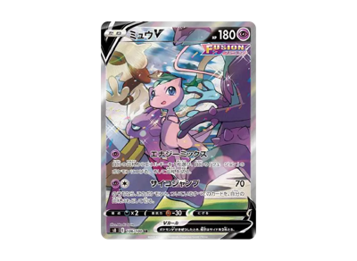
ミュウV SR: SA 106/100current: ¥30,900 ↓ (SNKRDUNK) — checked 5h ago
consider at 30k
8k pop
Low ¥8,000
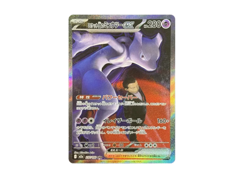
ロケット団のミュウツーex SARcurrent: ¥20,500 ↓ (SNKRDUNK) — checked 5h ago
Low ¥19,000
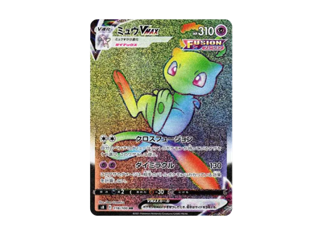
ミュウVMAX HR 118/100current: ¥24,899 (SNKRDUNK) — checked 5h ago
consider at 20k
1.5k pop
Low ¥22,000
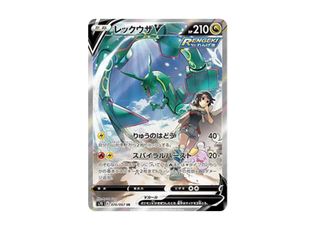
レックウザV SR 076/067current: ¥145,000 ↑ (SNKRDUNK) — checked 5h ago
consider at 100k
Low ¥110,000
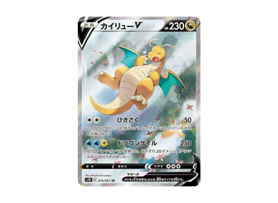
カイリューV SR 074/067current: ¥99,800 ↓ (SNKRDUNK) — checked 5h ago
Low ¥91,000
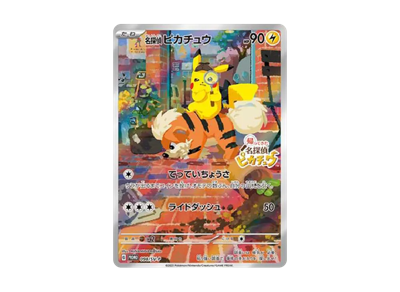
名探偵ピカチュウ SV-P 098current: ¥43,000 ↓ (Mercari) — checked 5h ago
bought mine at 46k
consider around 35k -- high pop
Low ¥39,000
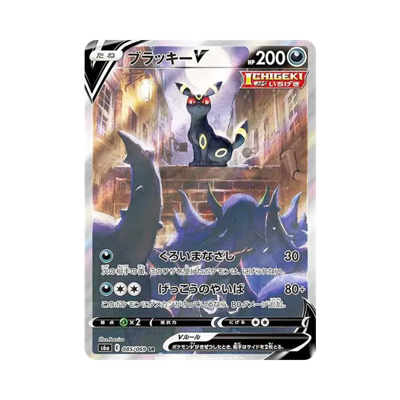
ブラッキーv sr sa 085/069current: ¥72,999 (SNKRDUNK) — checked 5h ago
Consider 60k
Low ¥65,000
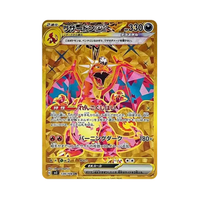
リザードン ex URcurrent: ¥20,799 ↓ (SNKRDUNK) — checked 5h ago
Consider above 25k